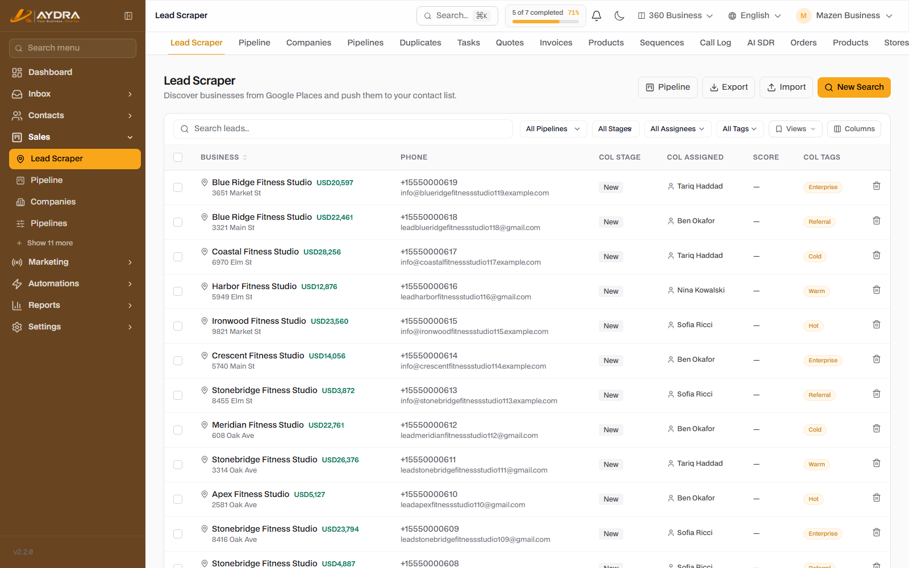
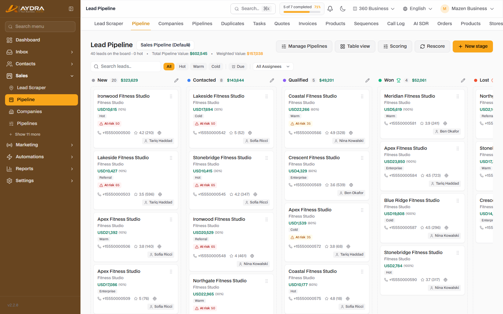
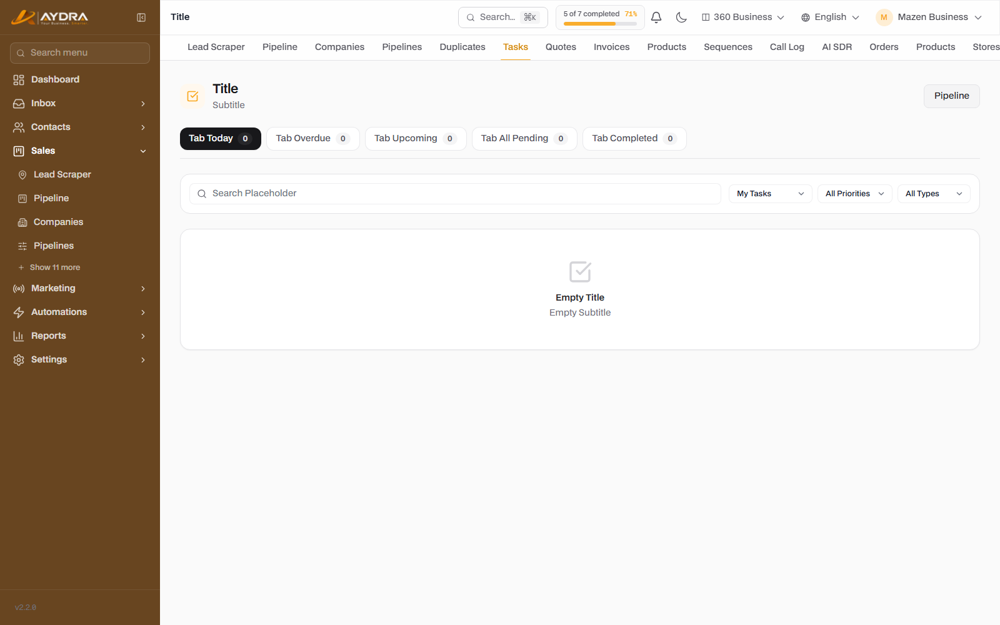
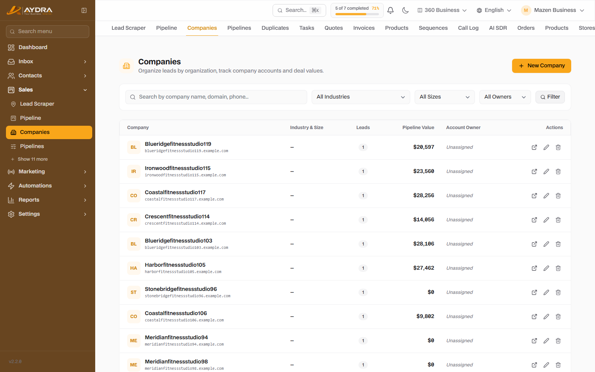

Leads & Pipeline
From prospecting to closing the deal. Learn how to fetch leads from Google Places, manage them on the kanban, and use scoring and tasks to close faster.
1. Fetching leads (Lead Scraper)
The system uses Google Places to find businesses by type and location. Every new lead is deducted from your monthly Lead Credits balance.
- Open Sales ← Leads and click New search.
- Business type / keyword: for example "restaurants" or "dental clinics".
- City / location: for example "Cairo" or "Riyadh".
- Search radius (metres): between 100 and 50,000 metres.
- Start the search. The request appears under "Recent searches" with a running status.
- When it finishes, the results are added to the leads list automatically.
Start with a small radius (2–5 km) to assess result quality before spending credits on a large radius. Each created lead is counted once even if you run the search again.
2. Leads list

- Search by name, phone, email or category.
- Filter by source, status, tag, owner or activity.
- View as a table or open the lead profile.
- Import/export leads from a file (if the feature is included in your plan).
3. Lead profile
Each lead gathers everything in one place:
| Section | What you find in it |
|---|---|
| Basic data | Name, phone, email, location, category, geo location |
| Tags | Manual tags + smart tags from AI |
| Score | A 0–100 score with the reason for the score |
| Activity | Last message, call, stage change, note |
| Conversation | The WhatsApp/email thread linked to the lead |
| Tasks | Follow-up tasks and their dates |
| AI advisor | Suggestions and follow-up messages (AI Sales feature) |
| Custom fields | Any fields you have added for leads |
4. Automatic scoring (Lead Scoring)
The system calculates a score for each lead from fixed signals (such as category and location) and behavioural ones (reply, open, engagement).
- A higher score means higher priority in the work list.
- The score can be recalculated in bulk from the scoring settings.
- The "threshold" can be used as an automation trigger: when it exceeds 80, send an offer.
- There is a scheduled job that decreases the score of inactive leads (Decay) so it does not stay high without engagement.
5. Pipeline

Go to Sales ← Pipeline. A kanban board whose columns are the sales stages.
- Drag the lead card between columns to change its stage.
- Open the card to edit the deal value and details.
- Add a note or a task from inside the card.
- Use the filters to show a specific stage or owner.
Stage settings
From Sales ← Pipeline settings you can add a stage, reorder it, change its colour, or delete it. Deleting a stage moves its deals to the default stage — check the count before deleting.
More than one pipeline
Plans that include Multi Pipeline let you create separate pipelines (such as: sales, partnerships, renewals). Each pipeline has its own stages.
6. Tasks and reminders

- Create a task linked to a lead or contact with a date and time.
- It appears under Sales ← Tasks and on the dashboard.
- Overdue tasks trigger a notification, and can be linked to the "task overdue" automation trigger.
- Close the task when it is done, or reschedule it.
7. Companies

A feature included in higher plans. It groups several leads under one company to track enterprise deals.
- Create a company and add leads to it.
- Track the total deal value for each company.
- View all the company's conversations from its page.
8. Lead duplicates
Go to Sales ← Duplicates (if included). The system detects leads that are similar by name/phone/email.
- Review the list of duplicate groups.
- Open the group and choose the "primary" record.
- Click Merge — the data and activity are moved to the primary record and the rest are deleted.
Merging cannot be undone. Review the fields before confirming.
9. Lead sources
Go to Marketing ← Lead sources. Each lead records its source (Scraper, Form, Campaign, Manual...). Use UTM links to find out which channel brings the best leads in the sales reports.
Common problems
| Problem | Cause | Fix |
|---|---|---|
| The search returns zero results | Imprecise keyword/location | Try a broader keyword or a larger radius |
| "You have reached the Lead Credits limit" | Monthly plan limit exceeded | Existing leads still work, but new searches stop until you upgrade or the month renews |
| I cannot drag the card | Viewer permission or the stage is locked | Check the role or the stage settings |
| The lead score does not change | Recalculation has not been run | Use "Recalculate score" |
| I do not see Companies | Not included in the plan | Upgrade your plan |
| Merge does not appear | The Duplicates feature is not enabled | Check your plan |
Next step: turn won deals into quotes and invoices from the Sales guide.